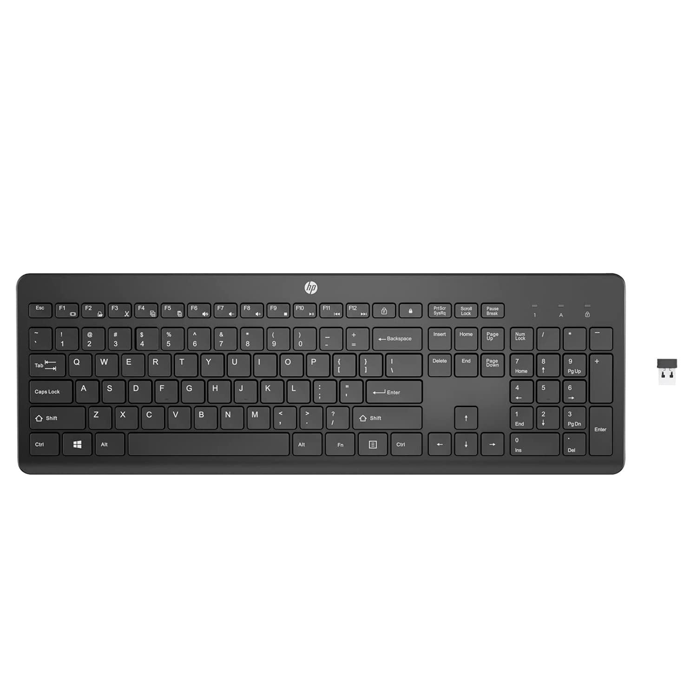
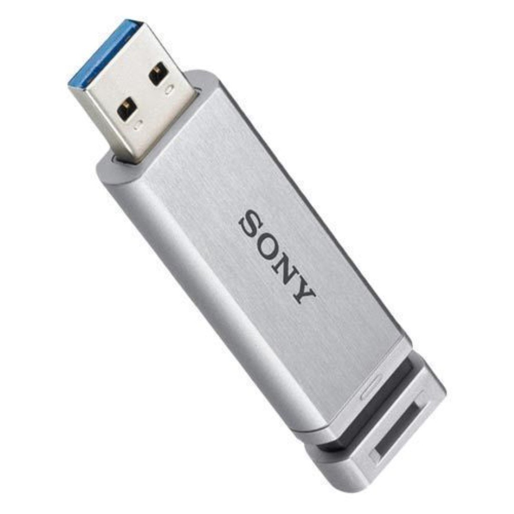

.jpg)
| product name | make | cost | image | Description |
|---|---|---|---|---|
| mouse | dell | 300 |
| A computer mouse (plural mice; also mouses) is a hand-held pointing device that detects two-dimensional motion relative to a surface. This motion is typically translated into the motion of the pointer (called a cursor) on a display, which allows a smooth control of the graphical user interface of a computer. |
| keyboard | Hp | 400 |  | HP keyboards are designed with a variety of features depending on the model, including chiclet-style keys, low-profile designs, multimedia shortcuts, and wireless connectivity options. Some keyboards are designed for specific purposes like gaming, while others focus on comfort and quiet operation. |
| pen drive | sony | 800 |  | Sony pendrives, also known as USB flash drives or memory sticks, are portable storage devices with a USB interface for transferring and storing data. They come in various storage capacities (e.g., 8GB, 16GB, 32GB, 64GB, 128GB) and feature a compact, lightweight design, making them easy to carry and use with computers, laptops, and other devices with USB ports. |